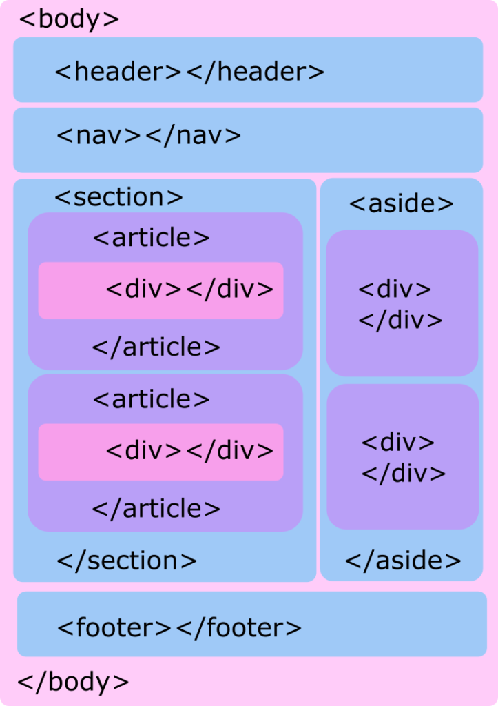

Lecturas
¿Qué es HTML?
Es un lenguaje utilizado para estructurar páginas web (las siglas de HTML significan Hyper Text Markup Language), es decir, Lenguaje de Marcas de Hipertexto, por medio de etiquetas conocidas en ingles como tags. Cada una de estas etiquetas establece la manera como debe ir organizada la pagina.
La siguiente imagen representa un ejemplo de una estructura (Mockup) de una pagina web.

Como se puede apreciar cada etiqueta representa una parte de la estructura en especifico. Gracias a esto, son muchas las posibilidades para el realizar un buen diseño.
Para realizar un buen diseño, no basta solo con sentarse a escribir "código", ya que esto es muy poco productivo, antes que nada se debe tener claro como se veriá la página web, por lo que se debe seguir unos pasos para tener buenas practicas de programacion:
Tener clara la idea de la página web.
Realizar los diseños necesarios (Mockups), sobre como se quiere que se vea la página. Es recomendable visitar diferentes sitios web para tener una idea especifica sobre el diseño de la página.
Elegir una paleta de colores acorde al proyecto. Hay muchas páginas web en la que nos proporcionan diferentes tonalidades que sean agradables a la vista del usuario.
Tener definida la manera de como se va a organizar la información en cada una de las secciones.
Llegados a este punto ya podremos empezar a escribir código en el editor de texto de preferencia.
Etiquetas del lenguaje HTML
Como bien se habia comentado al inicio, HTML integra una serie de etiquetas que brindan al programador lo necesario al momento de escribir código. Ya sea para semántica a nivel de texto, agrupación de contenido, secciones o contenido incrustado, hay una etiqueta para cada uso especifico. Algunas de estas son:
doctype html: Define que el documento está bajo el estándar de HTML 5
head: Representa una colección de metadatos acerca del documento, incluyendo enlaces a, o definiciones de, scripts y hojas de estilo.
tittle: Define el titulo del documento. el cual se muestra en la barra de título del navegador o en las pestañas de página.
link: Usada para enlazar JavaScript y CSS externos con el documento HTML actual.
script: Define ya sea un script interno o un enlace hacia un script externo. El lenguaje de programación es JavaScript
body: Representa el contenido principal de un documento HTML. Solo hay un elemento en un documento.
section: Define una sección en un documento.
article: Define contenido autónomo que podría existir independientemente del resto del contenido.
aside: Define algunos contenidos vagamente relacionados con el resto del contenido de la página. Si es removido, el contenido restante seguirá teniendo sentido.
h1, h2, h3, h4, h5, h6: Los elemento de cabecera implementan seis niveles de cabeceras de documentos; h1 es la de mayor y h6 es la de menor importancia. Un elemento de cabecera describe brevemente el tema de la sección que introduce.
header: Define la cabecera de una página o sección. Usualmente contiene un logotipo, el título del sitio Web y una tabla de navegación de contenidos.
footer: Define el pie de una página o sección. Usualmente contiene un mensaje de derechos de autoría, algunos enlaces a información legal o direcciones para dar información de retroalimentación.
main: Define el contenido principal o importante en el documento. Solamente existe un elemento main en el documento.
p: Define una parte que debe mostrarse como un párrafo.
li: Define un artículo de una lista enumerada.
div: Representa un contenedor genérico sin ningún significado especial.
br: Representa un salto de linea.
img: Representa una imagen.
iframe: Representa un contexto anidado de navegación, es decir, un documento HTML embebido.
video: Representa un video, y sus archivos de audio y capciones asociadas, con la interfaz necesaria para reproducirlos.
canvas: Representa un área de mapa de bits en el que se pueden utilizar scripts para renderizar gráficos como gráficas, gráficas de juegos o cualquier imagen visual al vuelo.
table: Representa datos con más de una dimensión.
form: Representa un formulario, consistiendo de controles que puede ser enviado a un servidor para procesamiento.
button: Representa un boton.
Estas son solo algunas etiquetas de las diferentes que otorga HTML para realizar la estructura de una página web.
¿Qué es CSS?
Se define como "Lenguaje de Hojas de Estilos en Cascada" y que nos permite aplicar estilos de manera salectiva a elementos en documentos HTML". Por medio de esté, podemos modificar el tipo de letra a utilizar, su tamaño, el color, insertar imagenes con animaciones, agregar vinculos a hacia otras páginas web, editar el tamaño de las secciones de la página, entre otros.

La estructura completa es llamada regla predeterminada (pero a menudo "regla" para abreviar). Nota tambien los nombres de las partes individuales:
Selector
El elemento HTML en el que comienza la regla, esta selecciona el (los) elemento(s) a dar estilo. Para dar estilo a un elemento diferente, solo cambia el selector.
Declaración
Una sola regla como "color: red"; especifica a cuál de las propiedades del elemento quieres dar estilo.
Propiedades
Maneras en las cuales puedes dar estilo a un elemento HTML. (En este caso, color es una propiedad del elemento p.) En CSS, seleccionas que propiedad quieres afectar en tu regla.
Valor de la propiedad
Maneras en las cuales puedes dar estilo a un elemento HTML. (En este caso, color es una propiedad del elemento p.) En CSS, seleccionas que propiedad quieres afectar en tu regla.
Otras partes importantes de la sintaxis:
Cada una de las reglas (aparte del selector) deben estar encapsulada entre corchetes ({}).
Dentro de cada declaracion, debes usar los dos puntos (:) para saparar la propiedad de su valor.
Dentro de cada regla, debes usar el punto y coma (;) para separar una declaración de la siguiente.
Comprendiendo el CSS
La idea de CSS es la de utilizar el concepto de separación de presentación y contenido, intentando que los documentos HTML incluyan sólo información y datos, relativos al significado de la información a transmitir (el contenido), y todos los aspectos relacionados con el estilo (diseño, colores, formas, etc...) se encuentren en un documento CSS independiente (la presentación).
De esta forma, se puede unificar todo lo relativo al diseño visual en un solo documento CSS, y con ello, varias ventajas:
Si necesitamos hacer modificaciones visuales lo hacemos en un sólo lugar y no tenemos que editar todos los documentos HTML en cuestión por separado.
Se reduce la duplicación de estilos en diferentes lugares, por lo que es más fácil de organizar y hacer cambios. Además, al final la información a transmitir es considerablemente menor (las páginas se descargan más rápido).
Es más fácil crear versiones diferentes de presentación para otros tipos de dispositivos: tablets, smartphones o dispositivos móviles, etc...
Tres tipos de estilos.
La información CSS se puede proporcionar por varias fuentes, ya sea adjunto como un documento por separado o incorporado en el documento HTML, y dentro de estas posibilidades destacan tres formas de dar estilo a un documento web:
Hoja de estilo externa:
La Hoja de Estilo Externa se almacena en un archivo diferente al del archivo con el código HTML al cal estar vinculado a través del elemento link, que debe ir situado en la sección head. Es la manera de programar ms eficiente, ya que separa completamente las reglas de formato para la página HTML de la estructura básica de la página.
Hoja de estilo interna:
La Hoja de Estilo Interna est incorporada a un documento HTML, a través del elemento style dentro de la sección head, consiguiendo de esta manera separar la información del estilo del código HTML.
Estilo en linea:
La Hoja de Estilo Interna est incorporada a un documento HTML, a través del elemento style dentro de la sección head, consiguiendo de esta manera separar la información del estilo del código HTML.
Versiones CSS:
Existen varias versiones: CSS1 y CSS2, la CSS3 está todavía en desarrollo por el CSS WG (Cascading Style Sheets Working Group).
Los navegadores actuales implementan bastante bien CSS1 desde 1999 (tres años después de su lanzamiento) aunque dependiendo de la marca y versión del navegador hay algunas pequeñas diferencias de implementación. El primer navegador en dar soporte completo al CSS1 ha sido Internet Explorer 5.0 for the Macintosh en 2000, anteriormente el que mejor soportaba CSS1 haba sido Opera, después otros navegadores también lo han ido implementando.
Sin embargo, CSS2 (lanzado en 1998) sólo está parcialmente implementado en los navegadores más recientes, variando en estos los niveles de implementación.
Ventajas
La principal ventaja de CSS sobre el lenguaje HTML o similar, es que el estilo se puede guardar completamente por separado del contenido siendo posible, por ejemplo, almacenar todos los estilos de presentación para una web de 10.000 páginas en un sólo archivo de CSS.
CSS permite un mejor control en la presentación de un sitio web que los elementos de HTML, agilizando su actualización.
Aumento de la accesibilidad de los usuarios gracias a que pueden especificar su propia hoja de estilo, permitiéndoles modificar el formato de un sitio web según sus necesidades, de manera que por ejemplo, personas con deficiencias visuales puedan configurar su propia hoja de estilo para aumentar el tamaño del texto.
El ahorro global en el ancho de banda es notable, ya que la hoja de estilo se almacena en cache después de la primera solicitud y se puede volver a usar para cada página del sitio, no se tiene que descargar con cada página web. Por otro lado, quitando todo lenguaje de marcado en la presentación en favor del uso de CSS reduce su tamaño y ancho de banda hasta más del 50%, esto beneficia al dueño del sitio web con menos ancho de banda y costes de almacenamiento, as como a los visitantes para los cuales las páginas se van a cargar más rápido.
Una página puede tener diferentes hojas de estilo para mostrarse en diferentes dispositivos, como pueden ser impresoras, lectores de voz, o móviles.
Propiedades del lenguaje CSS
CSS integra una serie de propiedades que nos permite aplicar diferentes tipos de estilos a todos los elementos que usamos en HTML. Algunas de estas son:
align-content: Permite ajustar las líneas dentro de un contenedor flex cuando hay espacio extra en el eje transversal.
align-items: Especifica la alineación predeterminada para los elementos dentro del contenedor flexible.
animation-delay: Especifica un retraso para el inicio de una animación. El valor de demora de la animación se define en segundos (s) o milisegundos (ms).
background-color: Establece el color de fondo de un elemento.
background-image: Establece una imagen como el fondo de un elemento. Por defecto, la imagen se repite para que cubra todo el elemento.
border-bottom: Establece el estilo del borde inferior para diferentes elementos.
border-bottom-color: Establece el color del vorde inferior de un elemento.
border-radius: Define el radio de las esquinas del elemento, puede tener de uno a cuatro valores. Medida en pixeles (px).
border-style: Establece el estilo de los cuatro bordes de un elemento. Esta propiedad puede tener de uno a cuatro valores.
color: Especifica el color del texto.
cursor: Especifica el cursor del mouse que se mostrará al apuntar sobre un elemento.
display: display Especifica el comportamiento de visualización (el tipo de cuadro de representación) de un elemento.
font-family: Especifica la fuente de un elemento. Puede contener varios nombres de fuentes como un sistema "alternativo". Si el navegador no admite la primera fuente, intenta con la siguiente fuente.
font-size: font-sizeEstablece el tamaño de una fuente.
height: Establece la altura de un elemento. (auto, valores numéricos en px, em %)
justify-content: Alinea los elementos del contenedor flexible cuando los elementos no usan todo el espacio disponible en el eje principal (horizontalmente). Puede tomar valores como (flex-start, flex-end, center, space-between, space-around).
margin: establece los márgenes para un elemento, puede tomar 4 valores y es una propiedad abreviada de las siguientes propiedades: margin-top, margin-right, margin-bottom, margin-left.
max-height: Establece la altura maxima para un elemento.
max-width: Establece el ancho maximo de un elemento.
text-align: Especifica la alineación horizontal del texto en un elemento. Valores (left, right, center, justify).
width: Establece el ancho de un elemento. El ancho de un elemento no incluye relleno, bordes o márgenes.
Como se puede apreciar, existen diferentes propiedades a aplicar a nuestros diseños.